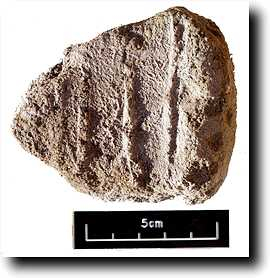

Tuesday 22 December
Right at the end of the day, the bottom of shaft H in the courtyard was finally cleared. The new room to the west seems to be about 2 m square, and is half full of debris. The bottom of the shaft continued to consist of lots of human remains. All we can assume is that Mond must have cleared the shaft and thrown various mummies etc back into it as it was refilled. This is all a big change from today, when we keep every piece of bone, wood, linen etc for further study!
Our architect Günter Heindl, who runs the restoration project of the German Archaeological Institute at the temple of Sety I, came by today to continue with the plans. Last year he planned the tomb and the courtyard, and this year he has to add the shafts when they are cleared. Today his aim was to plan Shaft G, which we hope to refill with discarded pottery.
|
In Shaft I, the clearing across the burial chamber continued. What Mond marked as a small shaft in that chamber seems more complex, as it could involve the whole of the south part of the chamber. We are speculating on a shaft, a recess for the adjacent chamber, or even a stairway. We should know in the next few days.
Below is a photo of an interesting find. It is a piece of unfired clay bearing an impression, which looks to us like the name Sennefer. We think that this is part of the original sealing of the tomb.

|
Wednesday 23 December
Days don't get any easier. We started this morning by having a look in the new chamber at the bottom of shaft H. Here is a picture of the debris blocking the entrance.
Inside, the room is fairly full of debris, and there is a little niche (for want of a better word) immediately to the right of the entrance. We began by clearing the entrance way, and are then going to take the debris back in a series of appropriate layers, as usual. A lot of material is coming out of this debris; we could see a lot of New Kingdom pottery, as well as much later material. We still have no idea as to the dating of the shaft, since all the material so far could be completely intrusive from the refilling.
The sunken floor in the south of the chamber we were clearing yesterday in Shaft I indeed does spread right across the room and narrows into the next chamber, so maybe it is part of the way into that chamber.
|
Lots of papyrus fragments continue to be found in this chamber; a particularly interesting find was some linen bearing possible religious texts, with the name of Sennefer at the end. These need a lot of conservation before we can try and read them, but here is a photo.
Sennefer(i)'s name is written just above the left of the 2 cm scale. We also found the lid of a rather nice ceramic canopic jar, almost certainly 18th dynasty.
18th dynasty jars normally have each a human head, the animal ones starting later in the New Kingdom. We hope our ceramic experts will be able in another season to identify sherds from the jars themselves.
|
Thursday 24 December
Another interesting day. Lots of material is coming out of both shafts. This morning in shaft H we completed the first layer across the room.
This layer contained quite a lot of bone and pieces of wood, as well as pottery. It is difficult to know what to make of the shaft at this stage, although quite a lot of the pottery to our non-expert eyes looks 18th dynasty. So do some of the wooden fragments, but there are no names or anything to tell us more about the owner. A mixture of debris is to be expected in the shaft, while in the room we might expect to find more of the original material. Analysis of the pottery, which will have to wait until another season, may tell us.
In the large shaft, we moved to the rear of the burial chamber in the course of the morning. Here an enormous amount of material is coming up. It mainly consists of 18th dynasty pottery, and should provide a good body of material. Many large jars are coming up in bits; here is one in situ which has survived better than the rest.
Several pieces of an alabaster jar have been found, one with the name of Senneferi. This could be a canopic or oil jar. Many more pieces of papyrus have appeared, as have two or three larger pieces of the inscribed linen mentioned yesterday. It appears that this bears spells from the Book of the Dead, not unknown in the 18th dynasty.
|
One in particular bears the name of Senneferi's mother, Satdjehuty, also known from inside TT99. The hieroglyphs are in the photo below, above the 10 cm part of the scale. All these fragments are going to have to await conservation before they can be studied.
There has also been a lot of plain mummy linen in a poor state of preservation. This means it has turned into a brown mess, largely as a result of the same higher than usual levels of moisture which caused the salt crystals to grow in the walls. This means that working can be rather unpleasant and dirty--have a look at the photo below.
|
Friday 25 December
For the first time for many years, Christmas Day has come on a Friday, so no work. We would like to wish our readers a happy Christmas!
We celebrated with friends and colleagues at Chicago House.
|
|
|

 The Dig Diary 1998--Part 7
The Dig Diary 1998--Part 7